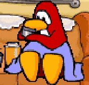

Manifesto
Navigation: History Online / Social Media / Indie Web / Accessibility | Last Updated: October 10, 2025This page serves more as a summary of how and why this website came to be, and just my general feelings as of right now with the state of the online world. Bechno Kid's and Petra's manifestos were inspirations to write my own, and it'll probably grow and shape itself over time as I refine my thoughts.
History Online
My history with online has always been ... very entrenched in community? I lived in places like Club Penguin and DeviantART and made some wonderful connections over the years (a few people which I managed to reconnect with from my old 2012 days on DA; I was deep into the OC/Canon Bleach community back then).
I was never much of a web surfer ... ish, most of my socialization was on DevART, Club Penguin, online games like Perfect World Online and Elsword, the early days of MSN and Skype (mostly with gaming friends), and kid site games (Webkinz, Jetix TV games, Barbie sites) cause I had a lot of fun on those and didn't feel the urge to dive around deeper.
Definitely came across stuff that I sure as hell shouldn't have at my age, Encyclopedia Dramatica you sure were something ... not the kinda thing you should read during high school lunch breaks.
As such, nostalgia doesn't drive me due to my history, and I'm not seeking it since I never grew up on stuff like Geocities when my time was spent in Webkinz and Club Penguin. I just miss customization that most places have stripped away (DeviantART and its stupid overhaul due to Wordpress buying it, Tumblr now redirecting to mobile views instead of themes, the enshittification of UI to all look the damn same everywhere unless you install extensions to change it).
(I still sometimes log into my old Webkinz account and have tried out Club Penguin private servers, but it doesn't hit like it used to.)
Social Media
These days, I'm not active much on socmed, mostly because I'm tired 95% of the time and have very little energy to spare. Tumblr was my first real social media I joined back in 2012, and I'm still on my original blog since then; my blog has always felt like a little website in itself, considering themes really allowed me to explore my creativity across my personal blog and my roleplay blogs, and it's why I've stuck around so long (considering I also roleplayed there).
I doubt I will ever drop social media altogether, since I find joy in being able to see what my mutuals and friends are interacting with and reblogging and talking about, even the most mundane of things. I also have art accounts to upkeep on occasion, as much as it's hard for me to do.
I met my best friends on here, one whom I met IRL, and many others I hope to meet in person one day because they've been by my side for years now. I can't discard that it's helped me keep friendships and human connection and not feeling all that alone (I wish I could teleport to visit people).
Even so, it'd be hard to say there hasn't been some shift in how volatile people can be, and it's why I dropped Twitter completely; having to see absolutely dogshit takes 24/7 is exhausting. I'm not saying Tumblr is free from it either, but as a veteran of the site, it feels more like watching the occasional clown car explosion before you just move on with your life.
Indie Web
I've heard of Neocities from a tumblr roleplay mutual who made his own a year or two ago, which I thought was really cool as well, but never pursued it further—the idea of making a website was cool ... but the coding wasn't.
At that time I also got into making carrds, and still do have my own personal one (and the many templates I've made for the Tumblr RPC); I love Carrd for its flexibility and ease of access to all people alike without any coding required, but ... it doesn't hit like a Tumblr theme does. You have no idea how annoyed I was seeing that in-line images aren't a thing!
My tumblr theme is as close to a website as I had then, but even so a lot of my links went out to other sites (Bluesky, Carrd, Toyhouse), and there's no true, centralized info hub ... that's me. I think the push that finally made me consider it was people talking about another wave of staff layoffs at Tumblr (god knows it's a cyclical thing at this rate for Tumblr to go through its annual 'it might die' phase), and having exported out my blog ... some part of me finally caved to looking back into Neocities, and making this site on the same day too.
Community will always keep me engaged, but I wanted to find more personalized corners that are me as well, and a creative outlet amidst the art burnout I have been in since 2024.
So, here I am now. I doubt this site will fully replace some places (there's no way in hell I'm transferring my entire Toyhouse over considering that's a culmination of years of my own artwork and commissions in images, and there's only so much JPEG and WEBP crunching that can make up for a 1GB space limit), but it'll be the most complete place that showcases my interests and random tidbits of my life.
And honestly I like the slowness of everything, even though I still find myself eagerly scrolling through and peeping around what my neighbours are doing when there are new updates to their sites ... there's something cozier about it. I like looking through what other people did with their websites! I love seeing people expressing themselves!
And it's a nice break from social media to focus my efforts somewhere else.
Wrapping Up
It's been a happy journey so far, and I'm a person that thrives in finding problems to solve in code—even if frustrating, it itches some part of my brain in having something to chew on and hammer at and look forward to working on.
Pages like my diary, blog, media log, are made for me to trim and grow over time, so I will always have something to revisit, even when my OC pages or art gallery is done; this will be a living site that always can have a new bud growing in.
This is a bunch of disjointed thoughts to summarize that this site is a little collection of what makes me who I am, and a collection of what I enjoy. I'm glad to have a little corner of respite away from everything else, and I hope that if you got to the end of this, that you enjoy your time here (even if it is just me babbling about random stuff or recipes I like or my OCs).